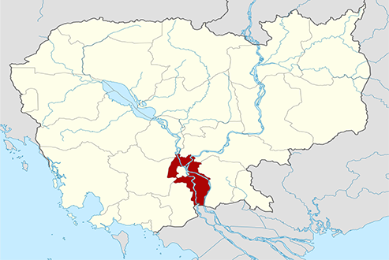
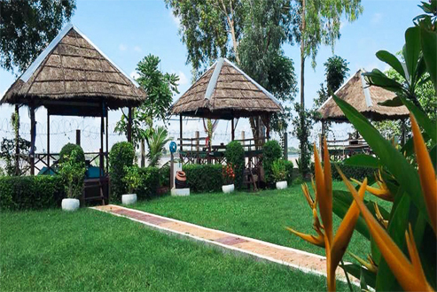

ខេត្តកណ្តាល
កណ្ដាល (ការបញ្ចេញសំឡេងខ្មែរ: [kɑnn'daːl], អានថា: កន់'ដាល) គឺជាខេត្តនៃប្រទេសកម្ពុជាដែលមានទីតាំងនៅប៉ែកអាគ្នេយ៍នៃប្រទេសនេះ។ ខេត្តមានព្រំដែន ខាងកើតជាប់ខេត្តព្រៃវែង ខាងត្បូងជាប់ ខេត្តតាកែវ ខាងកើតឈៀងខាងជើងជាប់ ខេត្តកំពង់ចាម ខាងកើតឈៀងខាងត្បូងជាប់នឹង
វៀតណាម។ ទីរួមខេត្ត គឺក្រុងតាខ្មៅ ដែលមានចំងាយ ១១ គម ខាងត្បូងនៃ[ភ្នំពេញ]។ កណ្ដាលគឺជាខេត្តមួយក្នុងចំណោមខេត្តដែលស្ដុកស្ដម្ភជាងគេក្នុងប្រទេស។ ខេត្តកណា្តលមាន ស្រុកចំនួន ១០, ក្រុង ១, ឃុំ-សង្កាត់ ១៤៦ ភូមិចំនួន ១០៨៧ មានប្រជាជនចំនួន ១០៧៥១២៥ នាក់ ហើយខេត្តនេះផងដែរមានផែ្ទដី
៣៥៦៨ សហាតិមាត្រការ៉េ។ ប្រជាជនខេត្តកណា្តលភាគច្រើនប្រកបរបរកសិកម្ម ដាំដំណាំ ក្រៅពីនេះរដូវធើ្វស្រែ ពួកគាត់មានរបរមួយទៀតគឺ របរឡើងត្នោត និងធើ្វស្រូវប្រាំង ព្រមទាំងដាំដំណាំផ្សេងៗទៀត ដើម្បីផ្គត់ផ្គង់ជីវភាពគ្រួសាររបស់ខ្លួន។

ខេត្តកណ្ដាលព័ទ្ធជុំវិញរាជធានីភ្នំពេញទាំងមូល។ ខេត្តនេះក៏ជាប៉ែកមួយនៃផ្ទៃទីក្រុងមេភ្នំពេញធំជាងគេដែលមានប្រជាជនមួយលាននាក់រស់នៅក្នុង និង ព័ទ្ធជុំវិញខេត្ត។ កាលណាយើងធ្វើដំណើរចេញពីភ្នំពេញ ព្រំដែនរវាងខេត្ត-រាជធានីទាំងពីរស្ទើរតែមើលមិនដឹង។ ខេត្តនេះប្រកបដោយផ្ទៃដីសើមទំនាបមានលក្ខណៈធម្មតា
ដែលគ្របដណ្ដប់ដោយវាលស្រែ និង ដីដាំដំណាំកសិកម្មដទៃទៀត។ រយៈកំពស់មធ្យមរបស់ខេត្តមិនលើសពី ១០ មាត្រ លើកំរិតទឹកសមុទ្រឡើយ។ ខេត្តក៏មានលក្ខណៈពិសេសដោយសារទន្លេធំបំផុតពីរនៅក្នុងប្រទេសនេះហូរកាត់ ទន្លេទាំងពីរនោះគឺ ទន្លេបាសាក់ និង មេគង្គ។
ខេត្តនេះមានអាកាសធាតុក្ដៅហើយសើមតាមបែបនិវត្តន៍។
រដូវខ្យល់មូសុងជាធម្មតាចាប់ផ្ដើមនៅខែ ឧសភា និង មានរហូតដល់ខែ តុលា ដែលក្រៅពីនោះពេញមួយឆ្នាំគឺជារដូវប្រាំង។ រយៈពេលក្ដៅគួរសមបំផុតប្រចាំឆ្នាំចាប់ផ្ដើមនៅរវាងខែ មីនា និង ឧសភា ពេលអាកាសធាតុត្រជាក់បំផុតគឺចាប់ពី ខែ វិច្ឆិកា រហូត ខែ មីនា។
ខេត្តកណ្តាលជាឈ្មោះខេត្តមួយក្នុងរចនាសម្ព័ន្ធគ្រប់គ្រងរដ្ឋបាលនៃប្រទេសកម្ពុជា
ពាក្យនេះពុំដឹងជាមានប្រវត្តិនិងប្រភពដើមយ៉ាងណាទេតែតាមការស្រាវជ្រាវបានឱ្យដឹងថាក្នុងផែនដីព្រះបាទនរោត្តម (១៨៦០-១៩០៤) និងផែនដីព្រះបាទស៊ីសុវត្ថិ (១៩០៤-១៩២៧) ព្រះរាជាណាចក្រកម្ពុជាចែកចេញជាច្រើនខេត្តក្នុងនោះពុំមានឈ្មោះខេត្តកណ្តាលទេ
កាលនោះឈ្មោះខេត្តមួយចំនួនជាឈ្មោះស្រុកសព្វថ្ងៃដូចជា ស្រុកល្វាឯម ស្រុកស្អាង ស្រុកកោះធំ ស្រុកកណ្តាលស្ទឹង ជាដើម (ឯកសារមហាបុរសខ្មែរ)។ បើតាមកំណត់ត្រាចារឹកនៅចេតិយអង្គឌួងនិងចេតិយបុរាណជាច្រើនទៀតលើភ្នំព្រះរាជទ្រព្យ ស្រុកពញាឮ យើងយល់ថាក្នុងរាជព្រះបាទនរោត្តម
ស៊ីសុវត្ថិ ភ្នំព្រះរាជទ្រព្យនេះស្ថិតក្នុង ស្រុកសំរោងទង (ឈ្មោះស្រុកមួយរបស់ខេត្តកំពង់ស្ពឺ
សព្វថ្ងៃ) តែក្រោយមកក្នុងរាជ្យព្រះបាទស៊ីសុវត្ថិ-មុនីវង្ស (១៩២៧-១៩៤១) មានការរៀបចំព្រំប្រទល់ខេត្តជាថ្មីទើបបានជាភ្នំព្រះរាជទ្រព្យត្រូវស្ថិតនៅក្នុងខេត្តកណ្តាលវិញ (កំណត់ត្រាចារឹកចេតិយព្រះស៊ីសុវត្ថិ) ដូចនេះ យើងអាចសន្និដ្ឋាន បានថាខេត្តកណ្តាលកើតមានក្នុងរចនាសម្ព័ន្ធរដ្ឋបាលចាប់តាំងពីរាជ្យព្រះបាទស៊ីសុវត្ថិ-មុនីវង្ស
សម័យដែលអាណានិគមបារាំងគ្រប់គ្រង។
